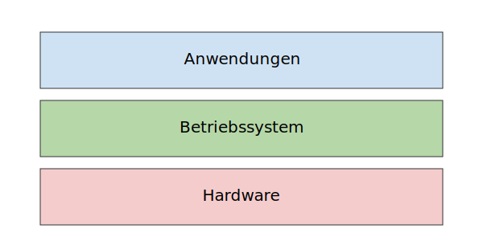

Was ist ein Betriebssystem?
Ein Betriebssystem ist die grundlegende Software, die einen Computer erst funktionsfähig macht. Es agiert als zentrale Schnittstelle zwischen der komplexen Hardware des Rechners und der Anwendungssoftware, die der Benutzer ausführt. Man kann es sich als eine Vermittlungsschicht vorstellen, die die Ressourcen des Computers verwaltet und den Programmen zur Verfügung stellt.
Definition nach DIN 44300: Betriebssystem > Hardware">
"Die Programme eines digitalen Rechensystems, die zusammen mit den Eigenschaften der Rechenanlage die Grundlage der möglichen Betriebsarten des digitalen Rechensystems bilden und insbesondere die Ausführung von Programmen steuern und überwachen."
Im Schichtenmodell eines Computersystems bildet die Hardware (CPU, Speicher, Festplatte) die unterste Ebene. Direkt darauf setzt das Betriebssystem auf. Es stellt eine Abstraktion der Hardware bereit, sodass Anwendungsprogrammierer nicht direkt mit den Details der Hardware interagieren müssen. Auf dem Betriebssystem laufen dann Systemprogramme (Compiler, Editoren, Shells) und Anwendungen (Textverarbeitung, Spiele, etc.).
Die zentralen Aufgaben eines Betriebssystems
Die Hauptaufgaben lassen sich in mehrere Kernbereiche unterteilen:
- Betriebsmittelverwaltung (Ressourcenmanagement): Verwaltung von CPU-Zeit, Hauptspeicher, E/A-Geräten und Festspeicher.
- Prozessverwaltung und Scheduling: Steuerung und Zuweisung der CPU an Prozesse.
- Speicherverwaltung: Verwaltung und Schutz des Hauptspeichers.
- Dateiverwaltung: Organisation des Festspeichers mit Dateisystemen.
- Ein-/Ausgabeverwaltung: Steuerung der Kommunikation mit Peripheriegeräten.
- Schutz und Sicherheit: Schutz vor unbefugtem Zugriff und fehlerhaften Programmen.
- Interprozesskommunikation (IPC): Mechanismen für Datenaustausch und Synchronisation zwischen Prozessen.
Arten von Betriebssystemen
Betriebssysteme lassen sich nach ihrem Haupteinsatzzweck klassifizieren:
- Batch-Systeme: Stapelverarbeitung ohne Interaktion.
- Time-Sharing-Systeme: Interaktive Nutzung durch mehrere Benutzer.
- Echtzeitbetriebssysteme: Garantierte Antwortzeiten für kritische Anwendungen.
- Verteilte Betriebssysteme: Netzwerkbasierte Koordination mehrerer Rechner.
- Mobile Betriebssysteme: Optimiert für Geräte mit begrenzten Ressourcen.
Struktur eines Betriebssystems
Ein Betriebssystem besteht typischerweise aus folgenden Komponenten:
- Kernel: Zentraler Teil, verwaltet Ressourcen und steuert Hardware.
- Systemaufrufe (System Calls): Schnittstelle zwischen Anwendungsprogrammen und Kernel.
- Shell: Benutzeroberfläche für die Kommunikation mit dem Betriebssystem.
- Dateisystem: Abstraktion und Verwaltung des persistenten Speichers.
- Treiber: Module für die Ansteuerung spezifischer Hardware.
Kernel-Architekturen
- Monolithischer Kernel: Alle Dienste laufen im Kernel-Modus (z.B. Linux).
- Microkernel: Minimale Kernel-Funktionalität, Dienste als Benutzerprozesse (z.B. Minix).
- Exo- und Nanokernel: Weiter reduzierte Kernel, noch mehr Dienste im User-Space.
Systemaufrufe
Systemaufrufe ermöglichen Programmen, Betriebssystemdienste anzufordern, z.B. für Dateien, Prozesse oder E/A. Typischerweise erfolgt der Wechsel vom User- in den Kernel-Modus über eine Trap-Instruction.

Historische Entwicklung
- 1945–1955: Erste Generation ohne OS.
- 1955–1965: Batch-Systeme auf Mainframes.
- 1965–1985: Time-Sharing und Mehrprogrammbetrieb (OS/360, Multics).
- 1980–1995: Mikroprozessoren, PCs, MS-DOS, UNIX, frühes Windows.
- 1995–Heute: Internet, Multicore, Virtualisierung, Cloud.